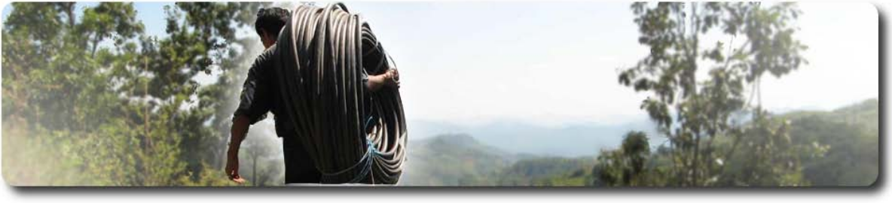
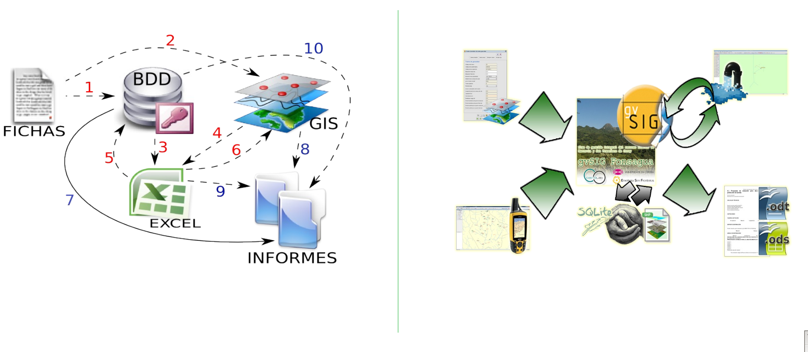
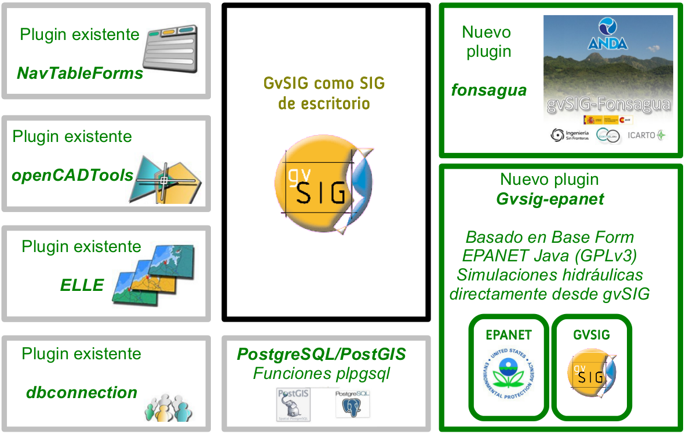
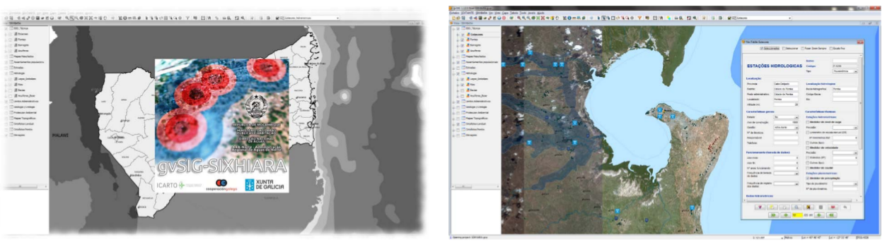
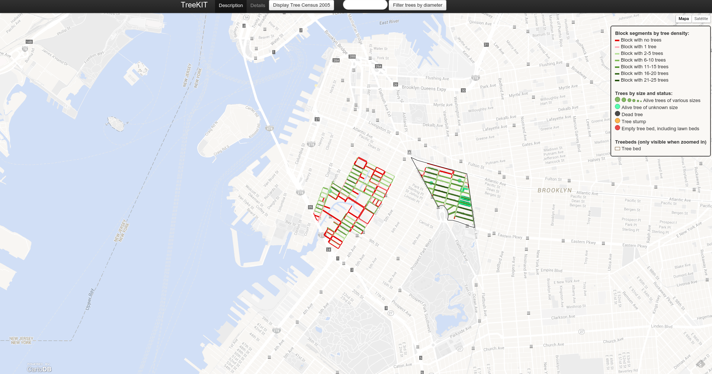
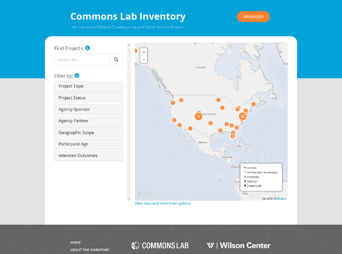
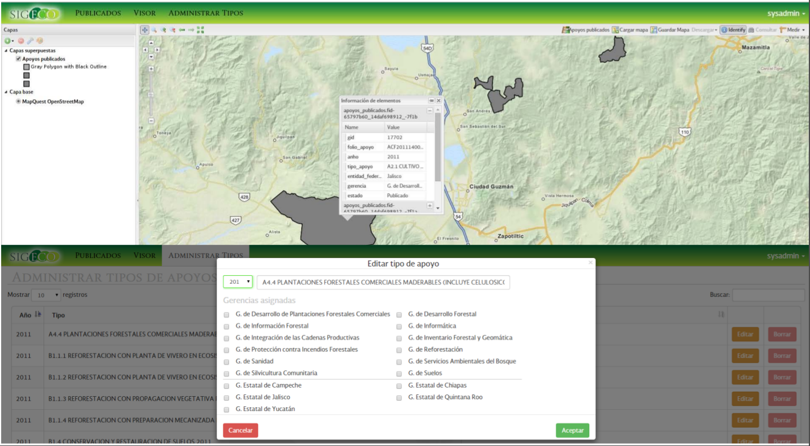
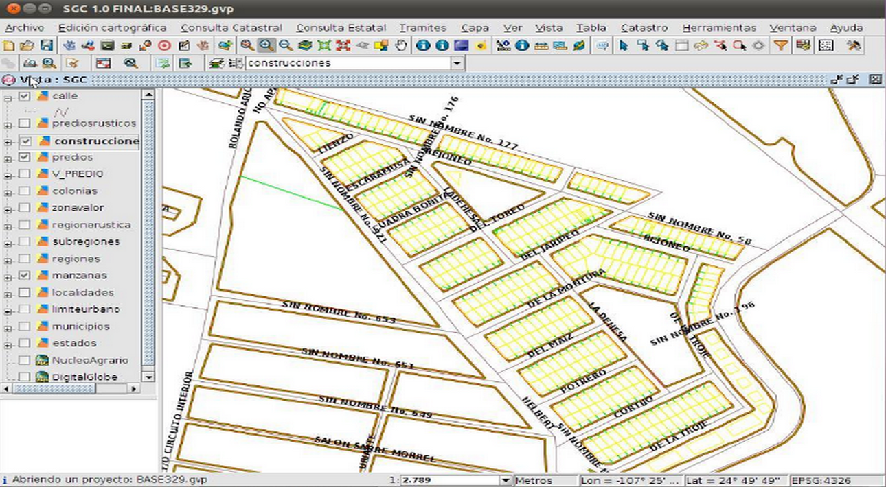

Software Libre galego polo mundo
Pablo Sanxiao (@psanxiao)
Xornada (r)evoLuƧión. 12 de xuño de 2015
iCarto se constituyó en junio de 2010 y nació como SpinOff dentro del Laboratorio de Ingeniería Cartográfica de la Universidade da Coruña (CartoLab)
{kind=link}
"Ponemos en valor la información mediante Sistemas de Información de Geográfica"
"Connect on your similarities. Profit from your differences"
(Valdis Krebs)
Revolución en las TIG, de la mano del Software Libre
 Final de la UEFA Champions League en Twitter
Final de la UEFA Champions League en Twitter
Cooperación para el Desarrollo
Software Libre - Tecnología para el Desarrollo Humano
Proyecto Fonsagua
Mejora del acceso
al agua en
comunidades rurales
Primeros pasos, Honduras
Solución más completa y mejorada
Proyecto SIXHIARA : Fortalecimiento institucional en la Administración Regional de Aguas do Norte (ARA-Norte) de Mozambique
TreeKIT: aplicación móvil multiplataforma de inventario
Commons Lab Inventory
Proyecto SIGECO
Aplicación SIG para la gestión del catastro municipal mexicano
¡Muchas gracias!
Pablo Sanxiao (@psanxiao)
Xornada (r)evoLuƧión. 12 de xuño de 2015